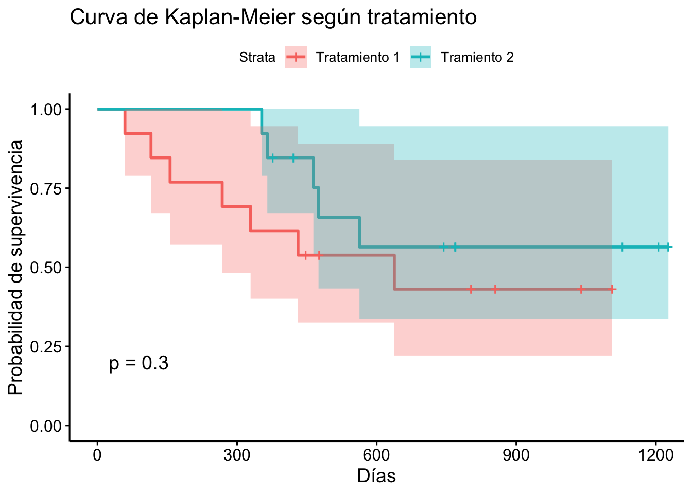
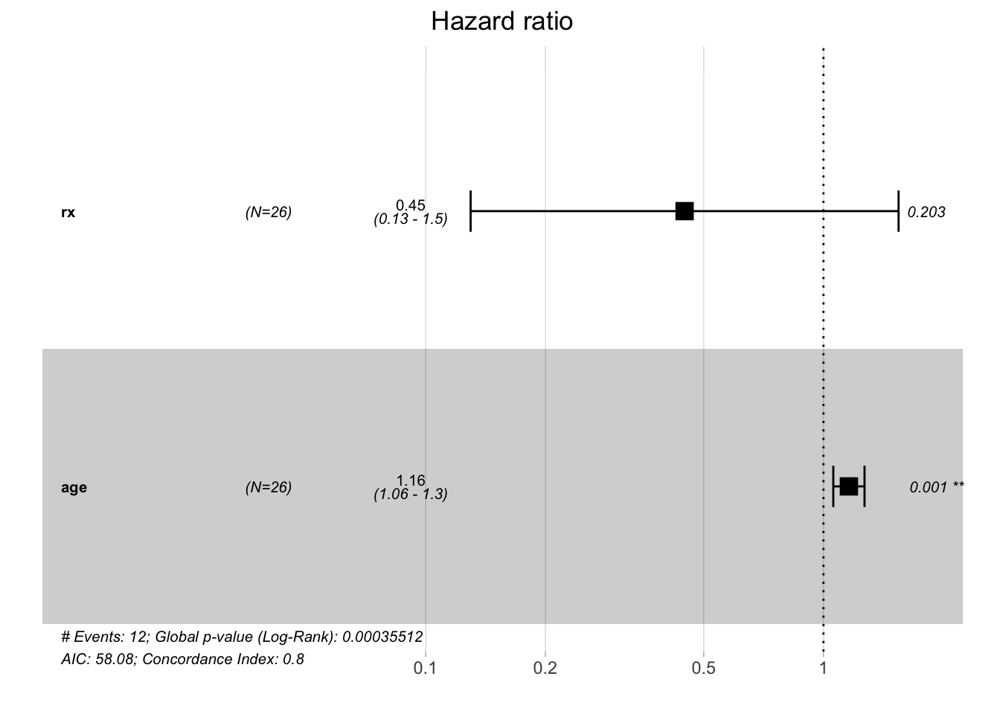

Eventos historicos y Análisis de Supervivencia
FACULTAD DE CIENCIAS SOCIALES - PUCP
Curso: POL 304 - Estadística para el análisis político 2 | Semestre
2025 - 1
Docente: Marylia Cruz
🎯 ¿Para qué sirve los Eventos históricos y el Análisis de Supervivencia?
Para estudiar el tiempo que transcurre hasta que ocurre un evento específico (muerte, abandono, recaída, cambio de empleo, etc.) y analizar los factores que influyen en ese tiempo.
Concepto clave:
Evento histórico: suceso de interés cuya ocurrencia es registrada a lo largo del tiempo (ej.: muerte, recaída, abandono escolar, divorcio, cambio de empleo).
Variable clave: tiempo hasta el evento (tiempo de seguimiento o de permanencia).
Importante: el evento puede no observarse para todos los casos ➤ aparece la censura.
Tipos de censura
- Censura a la derecha (la más común)
Sabemos que el evento no ocurrió durante el tiempo de observación, pero no sabemos si o cuándo ocurrirá después.
📌 Ejemplos:
Un paciente sigue vivo al finalizar el estudio. Una persona no ha abandonado su trabajo al cierre de la encuesta. Un usuario no cancela su suscripción durante el periodo de seguimiento.
🔁 Interpretación: sabemos que el tiempo al evento es mayor que el observado.
- Censura a la izquierda
El evento ya había ocurrido antes de que comenzara el seguimiento, pero no sabemos exactamente cuándo.
📌 Ejemplos:
Encuestamos a personas sobre edad al primer empleo, pero algunas ya estaban trabajando antes del periodo estudiado, sin recordar la edad exacta. En un estudio de enfermedades crónicas, algunos participantes ya tenían la enfermedad al ingresar al estudio, pero no se conoce el momento exacto del diagnóstico.
🔁 Interpretación: sabemos que el tiempo al evento es menor que el registrado.
- Censura intervalada
No conocemos la fecha exacta del evento, pero sabemos que ocurrió dentro de un intervalo de tiempo.
📌 Ejemplos:
Un paciente realiza chequeos médicos anuales y en uno de ellos aparece la enfermedad, pero no sabemos cuándo exactamente surgió entre chequeos. Una mujer realiza un test de embarazo mensual. El test da negativo en enero y positivo en febrero: el evento (embarazo) ocurrió entre ambos meses.
🔁 Interpretación: sabemos que el evento ocurrió entre dos tiempos conocidos.
Ejemplos
| Caso.de.Estudio | Evento.de.Interés | Unidad.de.Análisis | Variable.de.Tiempo | Censura | Covariables.Posibles |
|---|---|---|---|---|---|
| Caída de regímenes democráticos | Quiebre del régimen democrático | País-año | Años desde transición democrática | Democracias aún vigentes | PBI per cápita, fragmentación, desigualdad |
| Firma de tratados de paz en guerras civiles | Firma del tratado de paz | Conflicto armado | Años desde inicio del conflicto | Conflictos aún activos | Intervención externa, intensidad |
| Estabilidad de coaliciones | Disolución de la coalición | Coalición | Meses desde formación | Coaliciones aún vigentes | Ideología, liderazgo, crisis económica |
| Transición democrática | Democratización formal del régimen | País | Años bajo régimen autoritario | Países aún autoritarios | Protestas, presión internacional |
| Permanencia en alianzas | Salida de la alianza | País-alianza | Años desde entrada a la alianza | Países aún miembros | Cambio de liderazgo, amenazas externas |
📈 ANÁLISIS KAPLAN-MEIER
✅ ¿Para qué sirve?
Estimar la probabilidad de “sobrevivir” más allá de cierto tiempo. Comparar grupos de personas (por ejemplo, hombres vs. mujeres) en términos de duración hasta el evento.
⚙️ ¿Cómo funciona?
Divide el tiempo en intervalos donde ocurren eventos. Calcula la probabilidad de sobrevivir en cada intervalo. Maneja correctamente casos censurados (personas que no llegaron al evento durante el seguimiento).
Fórmula del Estimador de Kaplan-Meier
El estimador de Kaplan-Meier se define como:
\[ \hat{S}(t) = \prod_{t_i \leq t} \left( 1 - \frac{d_i}{n_i} \right) \]
donde:
- \(\hat{S}(t)\) es la probabilidad estimada de sobrevivir más allá del tiempo \(t\),
- \(t_i\) son los tiempos en los que ocurre al menos un evento,
- \(d_i\) es el número de eventos (por ejemplo, muertes) ocurridos en el tiempo \(t_i\),
- \(n_i\) es el número de individuos en riesgo justo antes de \(t_i\).
📅 ¿Cuándo usarla?
Cuando queremos describir la duración hasta un evento. Comparar curvas de supervivencia entre grupos sin ajustar por otras variables.
🛠 ¿Cómo se realiza?
Usar datos que incluyan: Tiempo de seguimiento. Evento (1 = ocurrió, 0 = censurado). Grupo (si hay comparación).MODELO DE REGRESIÓN DE COX
✅ ¿Para qué sirve?
Evaluar el efecto de varias variables sobre el tiempo al evento. Calcular riesgos relativos (hazard ratios) ajustados. No requiere asumir una forma específica de la función de supervivencia.
⚙️ ¿Cómo funciona?
Estima cómo las variables (edad, sexo, tratamiento…) afectan la razón de riesgo. Utiliza una función de riesgo basal no especificada y coeficientes exponenciales. Supone que las razones de riesgo son constantes en el tiempo (proporcionalidad de riesgos).
📅 ¿Cuándo usarla?
Cuando se quiere hacer un análisis multivariado del tiempo hasta el evento. Ideal si hay variables continuas y categóricas. Cuando se necesita ajustar por confusores.
🛠 ¿Cómo se realiza?
Base con: Tiempo. Evento (1/0). Covariables (edad, sexo, etc.).
Modelo de Regresión de Cox
El modelo de Cox, o modelo de riesgos proporcionales, se expresa como:
\[ h(t | X) = h_0(t) \cdot \exp(\beta_1 X_1 + \beta_2 X_2 + \cdots + \beta_p X_p) \]
donde:
- \(h(t | X)\) es la función de riesgo en el tiempo \(t\) dado el vector de covariables \(X\),
- \(h_0(t)\) es la función de riesgo basal (baseline hazard), no especificada paramétricamente,
- \(\beta_1, \beta_2, \dots, \beta_p\) son los coeficientes estimados para las covariables \(X_1, X_2, \dots, X_p\),
- \(\exp(\beta_j)\) se interpreta como el hazard ratio asociado a la covariable \(X_j\).
Este modelo permite estimar el efecto de las covariables sobre la razón de riesgo sin hacer suposiciones sobre la forma funcional de \(h_0(t)\), lo cual lo hace semiparamétrico.
- Si \(\exp(\beta_j) > 1\): mayor riesgo de ocurrencia del evento asociado a un aumento en \(X_j\),
- Si \(\exp(\beta_j) < 1\): efecto protector o menor riesgo,
- El modelo asume proporcionalidad de riesgos, es decir, que los efectos de las covariables no cambian en el tiempo.
¿Cómo se realiza en R el análisis de eventos historicos?**
Ejemplo:
Aunque la base ovarian tiene un origen clínico (cáncer de ovario), podemos usarla como una base para aprender análisis de eventos históricos (supervivencia).
- Cada paciente representa una “institución pública” observada a lo largo del tiempo. El evento de interés es “el colapso de la operación institucional” (similar a una falla del tratamiento). Queremos saber cuánto tiempo permanecen activas y si las decisiones iniciales (como el tipo de intervención recibida) afectan su duración activa.
# Paso 1: Cargar librerías necesarias
library(survival)
library(survminer)## Loading required package: ggpubr##
## Attaching package: 'survminer'## The following object is masked from 'package:survival':
##
## myeloma# Cargar base de datos
data("ovarian")## Warning in data("ovarian"): data set 'ovarian' not foundhead(ovarian)## futime fustat age resid.ds rx ecog.ps
## 1 59 1 72.3315 2 1 1
## 2 115 1 74.4932 2 1 1
## 3 156 1 66.4658 2 1 2
## 4 421 0 53.3644 2 2 1
## 5 431 1 50.3397 2 1 1
## 6 448 0 56.4301 1 1 2- futime Tiempo hasta evento o censura (días)
- fustat Estado: 1 = evento ocurrió, 0 = censurado
- rx Tipo de tratamiento recibido (1 o 2)
- age Edad de la paciente
¿El tipo de tratamiento recibido afecta la duración de funcionamiento institucional (supervivencia)?
library(survival)
library(survminer)
data("ovarian")## Warning in data("ovarian"): data set 'ovarian' not foundnames(ovarian)## [1] "futime" "fustat" "age" "resid.ds" "rx" "ecog.ps"Definimos el modelo
km_modelo=survfit(Surv(futime,fustat)~rx,data=ovarian)
summary(km_modelo)## Call: survfit(formula = Surv(futime, fustat) ~ rx, data = ovarian)
##
## rx=1
## time n.risk n.event survival std.err lower 95% CI upper 95% CI
## 59 13 1 0.923 0.0739 0.789 1.000
## 115 12 1 0.846 0.1001 0.671 1.000
## 156 11 1 0.769 0.1169 0.571 1.000
## 268 10 1 0.692 0.1280 0.482 0.995
## 329 9 1 0.615 0.1349 0.400 0.946
## 431 8 1 0.538 0.1383 0.326 0.891
## 638 5 1 0.431 0.1467 0.221 0.840
##
## rx=2
## time n.risk n.event survival std.err lower 95% CI upper 95% CI
## 353 13 1 0.923 0.0739 0.789 1.000
## 365 12 1 0.846 0.1001 0.671 1.000
## 464 9 1 0.752 0.1256 0.542 1.000
## 475 8 1 0.658 0.1407 0.433 1.000
## 563 7 1 0.564 0.1488 0.336 0.946A los 59 días, 13 personas seguían en seguimiento, y ocurrió 1 evento (falla). La probabilidad estimada de supervivencia hasta ese momento fue 92.3%.
A los 115 días, el número de personas en riesgo era 12, y ocurrió otro evento. La probabilidad acumulada de seguir “viva” (sin evento) bajó a 84.6%
Gráfico
ggsurvplot(km_modelo,
data=ovarian,
conf.int = TRUE,
pval = TRUE,
legend.labs=c("Tratamiento 1","Tramiento 2"),
xlab="Días",
ylab="Probabilidad de supervivencia",
title="Curva de Kaplan-Meier según tratamiento")
Puedes comparar qué grupo tiene una caída más rápida, lo que indica menor supervivencia
Puedes mirar el p-valor del test de log-rank en el gráfico (ggsurvplot(…, pval = TRUE)):
Si p < 0.05, hay diferencias estadísticamente significativas entre los grupos.
Curvas que descienden más lentamente indican mayor duración / supervivencia.
Curvas que caen rápido = mayor frecuencia de eventos (muertes, fallas, renuncias, etc.).
¿Qué es el test de log-rank?
Es una prueba no paramétrica que compara si hay diferencias significativas en la supervivencia entre dos o más grupos a lo largo del tiempo.
- H₀ (nula): Las curvas de supervivencia no presentan diferencias significativas en todos los grupos.
Regreion de Cox
Estima el efecto de una o más covariables sobre el hazard (tasa de riesgo) de ocurrencia del evento a lo largo del tiempo.
- La fórmula general es:
cox_model=coxph(Surv(futime,fustat)~rx+age,data=ovarian)
summary(cox_model)## Call:
## coxph(formula = Surv(futime, fustat) ~ rx + age, data = ovarian)
##
## n= 26, number of events= 12
##
## coef exp(coef) se(coef) z Pr(>|z|)
## rx -0.80397 0.44755 0.63205 -1.272 0.20337
## age 0.14733 1.15873 0.04615 3.193 0.00141 **
## ---
## Signif. codes: 0 '***' 0.001 '**' 0.01 '*' 0.05 '.' 0.1 ' ' 1
##
## exp(coef) exp(-coef) lower .95 upper .95
## rx 0.4475 2.234 0.1297 1.545
## age 1.1587 0.863 1.0585 1.268
##
## Concordance= 0.798 (se = 0.076 )
## Likelihood ratio test= 15.89 on 2 df, p=4e-04
## Wald test = 13.47 on 2 df, p=0.001
## Score (logrank) test = 18.56 on 2 df, p=9e-05Estimamos el efecto del tipo de tratamiento y de la edad sobre el riesgo de colapso institucional.
El hazard ratio de rx indica si un tratamiento acelera o retrasa el evento, controlando por la edad.
Si el HR de rx es < 1, entonces el tratamiento 2 reduce el riesgo de colapso, prolongando la duración operativa.
Si el HR > 1, el tratamiento 2 acelera el evento, indicando menor supervivencia.
Si el p-valor < 0.05, la diferencia es estadísticamente significativa.
- rx : tratamiento (expo del coeficiente 0.44)
Las personas que recibieron el tratamiento rx=2 tiene un 56% menos de riesgo de que ocurra el evento en comparación con el grupo rx=1
- edad = ( expo coeficiente 1.158)
Por cada año adicional de edad, el riesgo de que ocurra el evento aumenta en 15.8%, manteniendo constante el resto de los factores (independiente del tratamiento)
Visualización
Esto genera un forest plot con los hazard ratios y sus intervalos de confianza.
library(survminer)
ggforest(cox_model,data=ovarian)
- Una línea vertical en HR = 1: esta es la línea de no efecto.
Cada variable del modelo tiene:
- Un punto (el HR estimado),
- Una barra horizontal (intervalo de confianza al 95%)
Interpretación del Hazard Ratio (HR) en gráficos tipo Forest Plot
| Posición del HR con respecto a 1 | Interpretación |
|---|---|
| HR a la derecha de 1 | Aumenta el riesgo (HR > 1) |
| HR a la izquierda de 1 | Disminuye el riesgo (HR < 1, efecto protector) |
| Intervalo de confianza cruza el 1 | No significativo (p > 0.05) |
| Intervalo de confianza fuera del 1 | Efecto estadísticamente significativo (p < 0.05) |